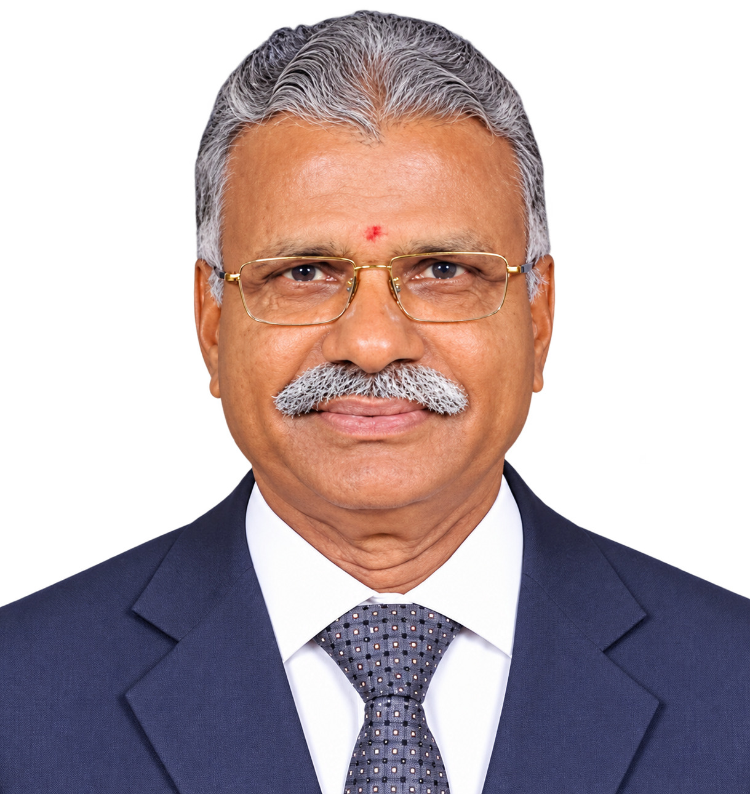
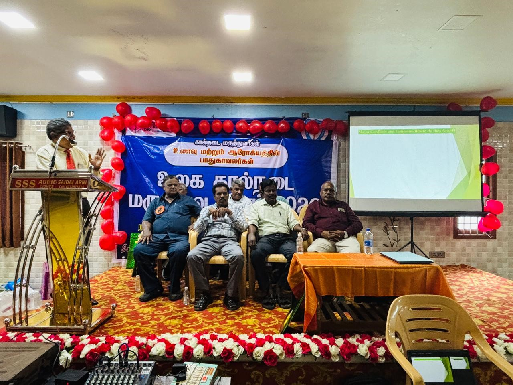
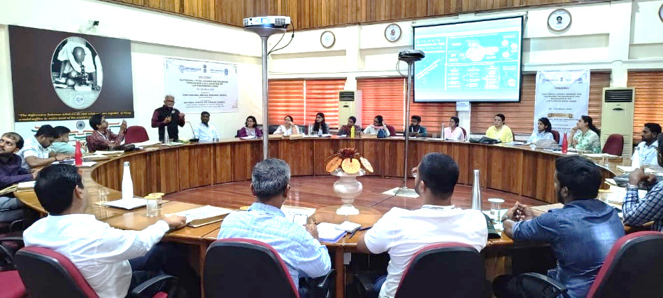
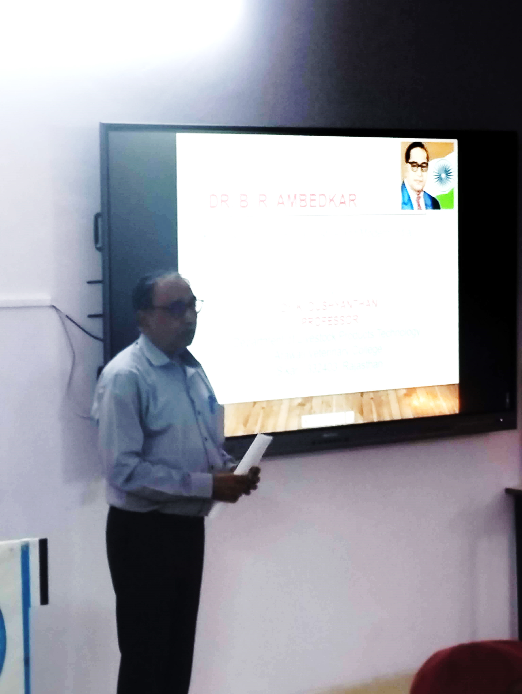

Inspiring Young Minds: Dr. V. Thanaseelaan at St. Xavier’s College Hostel Day
Dr. V. Thanaseelaan attended the Hostel Day function of St. Xavier’s College on 7 March 2026 as the Guest of Honour.
Addressing the student community, he emphasised the importance of perseverance, discipline and clarity in setting career goals. Drawing on his own academic and professional journey, he encouraged students to make effective use of available opportunities and to strive for excellence in their pursuits.
Interactions with experienced alumni provide students with opportunities to learn from professional experiences beyond the classroom. Such engagements can offer practical perspectives and guidance as students consider their academic and career paths.
TTPA congratulates Dr. V. Thanaseelaan on his continued engagement with the student community and his efforts to encourage and guide young learners.
Dr. Raman Muthusamy Participates in Strategic Digital One Health Initiative
Dr. Raman Muthusamy participated in a strategic meeting on Digital One Health Collaboration, held on 10 March 2026 at IKP Knowledge Park, Genome Valley, Hyderabad.
The discussions, led by Dr. Raman Muthusamy, focused on opportunities for advancing innovation and sustainability in veterinary and pet care, with particular attention to Digital One Health education and collaborative initiatives.
Key priorities identified during the meeting included capacity building, biosecurity preparedness and interdisciplinary research to address emerging health challenges.
The discussions also considered the integration of Geo-AI for disease surveillance, along with initiatives such as CHMI for livestock wellness, nutrition and water safety, as potential approaches within public and animal health programmes.
TTPA congratulates Dr. Raman Muthusamy on his contribution to this collaborative initiative and his continuing engagement in advancing Digital One Health approaches.

Dr. L. Gunaseelan Speaks on Vaccinology and Zoonotic Threats at Arani
Dr. L. Gunaseelan delivered a special address to Animal Husbandry veterinarians at Arani in connection with World Veterinary Day, highlighting the evolving and enduring importance of the veterinary profession.
His presentation covered key aspects of canine vaccines and vaccinology, with practical perspectives relevant to field veterinarians. Drawing on lessons from the COVID-19 pandemic, he also emphasised the importance of preparedness for emerging zoonotic threats.
Addressing issues at the animal–public health interface, Dr. Gunaseelan discussed the challenges associated with free-roaming dogs and their management, including their implications for public health.
The session also included discussion of reports concerning H5N1 and crow deaths, reinforcing the importance of vigilance, disease surveillance and coordinated approaches to safeguarding both animal and human health.

TTPA congratulates Dr. L. Gunaseelan on his contribution to continuing veterinary education and his efforts to promote awareness of vaccinology, zoonotic diseases and the interconnectedness of animal and public health.
“Prevention of Zoonotic Infections with Special Reference to Leptospirosis”
Dr. Raman Muthusamy delivered a lecture titled “Prevention of Zoonotic Infections with Special Reference to Leptospirosis” on 13 March 2026 at the ICMR Regional Medical Research Centre, Srivijayapuram (Port Blair), Andaman and Nicobar Islands.
The lecture formed part of a week-long hands-on training workshop, conducted from 9–13 March 2026, with participation by more than 30 research faculty members from State Reference Laboratories, VRDL, the Indian Council of Medical Research, the Indian Council of Agricultural Research, and medical colleges across India.
Dr. Raman Muthusamy highlighted preventive strategies, early diagnosis and the public health significance of zoonotic infections, with particular reference to leptospirosis.
The session provided an opportunity to share veterinary and public health perspectives on the prevention and management of zoonotic diseases within a multidisciplinary training programme.

TTPA congratulates Dr. Raman Muthusamy on his contribution to professional training and his continuing efforts to promote awareness and prevention of zoonotic diseases.
“Dr. K. Dushyanthan Delivers Lecture Commemorating Dr. B. R. Ambedkar”
Dr. K. Dushyanthan delivered a lecture to the staff and students of the College on the occasion of the birth anniversary of Dr. B. R. Ambedkar.
In his address, Dr. Dushyanthan highlighted different facets of Dr. Ambedkar’s life and contributions, including his work as a jurist and advocate of social justice and equality. He discussed Dr. Ambedkar’s efforts towards education, empowerment and the advancement of marginalised sections of society. These themes are consistent with Government of India accounts of Dr. Ambedkar’s public contributions.
Dr. Dushyanthan also discussed the continuing relevance of Dr. Ambedkar’s ideas on equality, education and social justice, providing students with an opportunity to reflect on their significance in contemporary society.

TTPA congratulates Dr. K. Dushyanthan on his contribution to this commemorative academic programme and his engagement with students and the academic community.